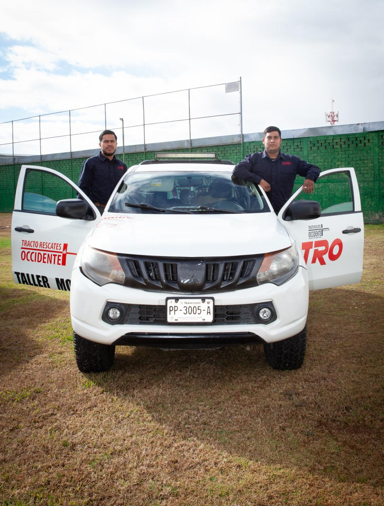
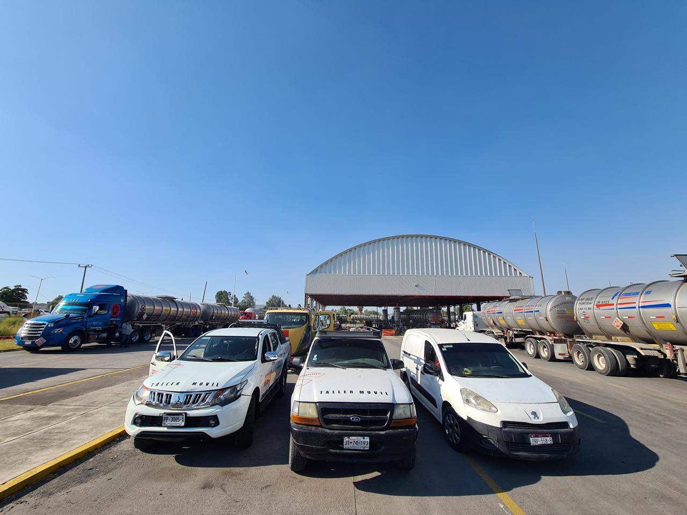
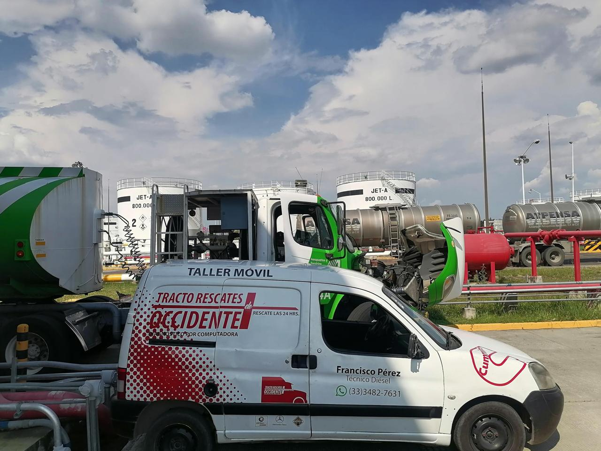
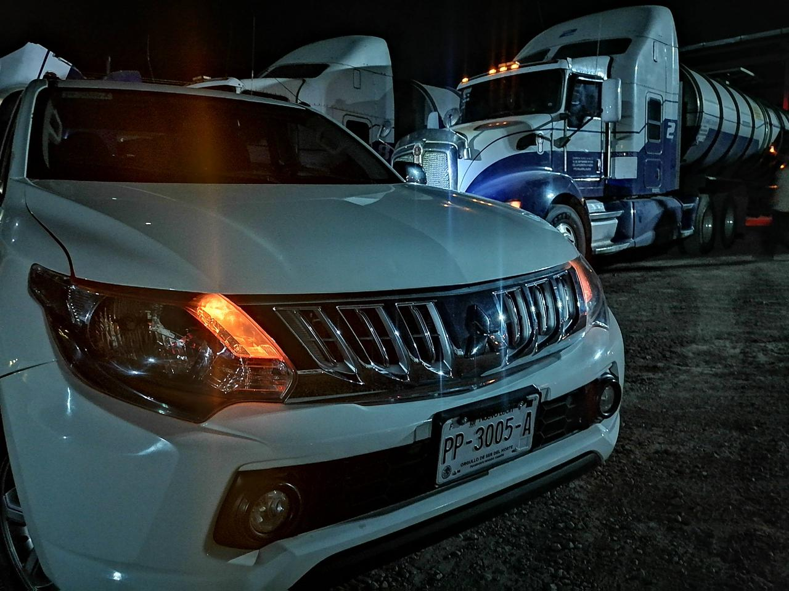
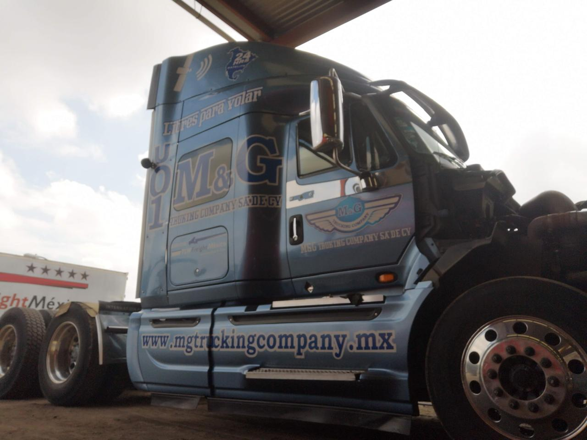
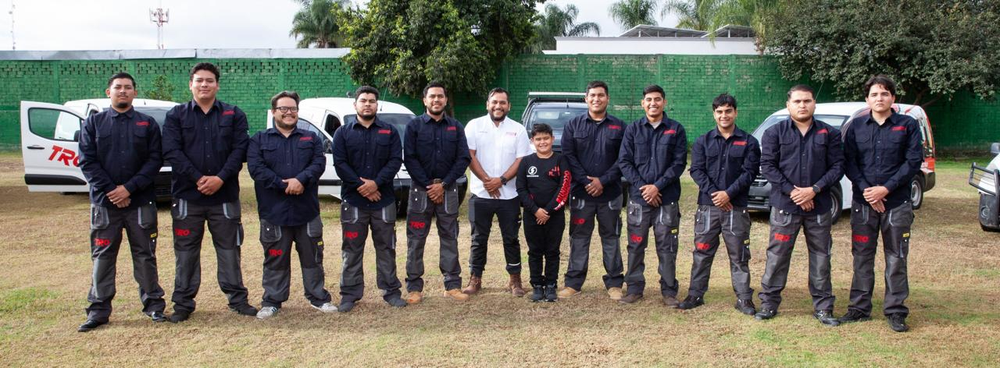

Comunícate, permítenos platicarte más sobre como somos el mejor aliado para el servicio y rescate de tus flotillas.
C. La Cardona 15A
C. La Cardona 15A, Marcelino García Barragán, 45134 Nuevo México, Jal., México
Etiquétanos en tus post de Facebook e Instagram con los hashtag:
#TRO24HRS #SOMOSTRO #RESCATESTRO






¡Gracias por tu visita!
¡Vuelve pronto!